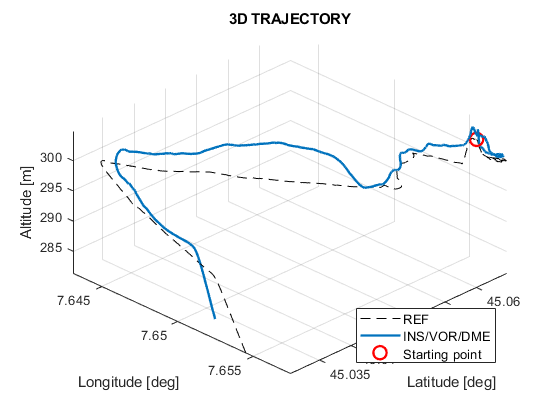
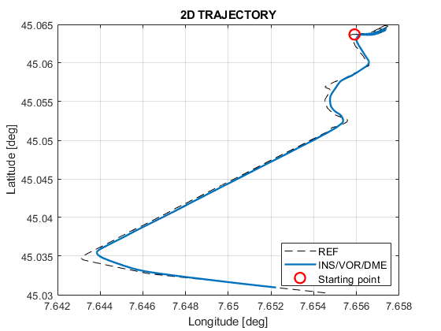
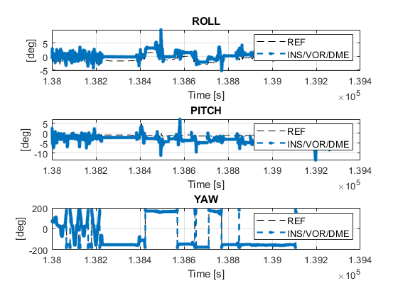
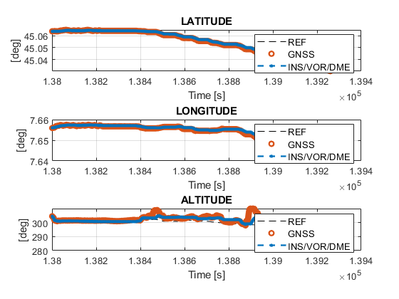
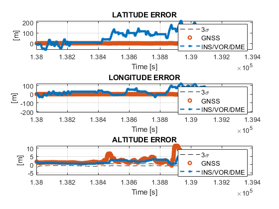

Contents
- deneme
- CODE EXECUTION PARAMETERS
- CONSTANTS
- TIME INTERVAL
- REFERENCE
- VOR-DME INIT
- DISTANCE CALCULATION(m)
- BEARING CALCULATION(Deg)
- VEHICLE POSITION CALCULATE
- DEG TO RAD CONVERSIONS
- IMU ERROR PROFILE
- VOR/DME ERROR PROFILE
- NAVIGATION TIME
- TRAVELED DISTANCE
- INS/VOR/DME INTEGRATION
- INTERPOLATION OF INS/VOR/DME DATASET
- NAVIGATION RMSE
- PLOTS
% This MATLAB code simulates the YildizNav system, which integrates an % inertial navigation system (INS) with a VOR/DME system. % INS data is collected from inertial measurement unit (IMU) % sensors, Very high frequency omni-directional range / distance measuring % equipment (VOR/DME) data is simulated based on GNSS measurements. % Authors: MUHAMMED YAVUZ HANEGE, MEHMET EMRE EYVAZ, KEREM VATANSEVER % % This project is inspired by the "NaveGo" INS/GNSS project. % % Specially thanks to our academic advisor, Dr. "BAHADIR ÇATALBAŞ". % % % % Copyright (C) 2014, Rodrigo Gonzalez, all rights reserved. % % This file is part of YildizNav, an open-source MATLAB toolbox for % simulation of integrated navigation systems. % % YildizNav is free software: you can redistribute it and/or modify % it under the terms of the GNU Lesser General Public License (LGPL) % version 3 as published by the Free Software Foundation. % % This program is distributed in the hope that it will be useful, % but WITHOUT ANY WARRANTY; without even the implied warranty of % MERCHANTABILITY or FITNESS FOR A PARTICULAR PURPOSE. See the % GNU Lesser General Public License for more details. % % You should have received a copy of the GNU Lesser General Public % License along with this program. If not, see % <http://www.gnu.org/licenses/>. % % % Modifications by Yavuz Hanege <hanegeyavuz@gmail.com> % Modifications by Mehmet Emre Eyvaz <mehmetemre.eyvaz@gmail.com> % Modifications by Kerem Vatansever <keremvatansver@gmail.com> % Date: 05.2024 clc; % Clear command window clear; % Clear workspace close all; % Close all figure windows matlabrc; % Reload MATLAB startup options format long; % Set double-precision format % Paths to YildizNav functions addpath C:\Users\yhane\Desktop\Yildiz_Localization_INS_GNSS\ins addpath C:\Users\yhane\Desktop\Yildiz_Localization_INS_GNSS\ins-gnss addpath C:\Users\yhane\Desktop\Yildiz_Localization_INS_GNSS\conversions addpath C:\Users\yhane\Desktop\Yildiz_Localization_INS_GNSS\performance-analysis addpath C:\Users\yhane\Desktop\Yildiz_Localization_INS_GNSS\plot addpath C:\Users\yhane\Desktop\Yildiz_Localization_INS_GNSS\allan-variance addpath C:\Users\yhane\Desktop\Yildiz_Localization_INS_GNSS\Radio-Navigation
deneme
% rtk fprintf('Yildiz_NAV: loading reference data... \n') load ref %imu fprintf('Yildiz_NAV: loading MPU-6000 IMU data... \n') load mpu6000_imu %gnss fprintf('Yildiz_NAV: loading Ekinox GNSS data... \n') load ekinox_gnss
Yildiz_NAV: loading reference data... Yildiz_NAV: loading MPU-6000 IMU data... Yildiz_NAV: loading Ekinox GNSS data...
CODE EXECUTION PARAMETERS
INS_VOR_DME = 'ON'; PLOT = 'ON'; % Check if variables exist, otherwise set default values if (~exist('INS_VOR_DME', 'var')) INS_VOR_DME = 'OFF'; end if (~exist('PLOT', 'var')) PLOT = 'OFF'; end
CONSTANTS
G = 9.80665; % Gravity constant, m/s^2 D2R = (pi/180); % Degrees to radians R2D = (180/pi); % Radians to degrees G2T = 1E-4; % Gauss to Tesla normalize_angle = @(angle) mod(angle + 360, 720) - 360; % Normalize Function
TIME INTERVAL
tmin = 0; % VOR/DME first time tmax = 400 ; % VOR/DME last time
REFERENCE
load ref_zedf9p.mat ref_data = struct2table(ref_data);
% ref data structure ref.lat = ref_data.Latitude; ref.lon = ref_data.Longitude; ref.t = double(ref_data.Time); ref.h = ref_data.Altitude; % Serveral fields are missing: roll, pitch, yaw,vel etc.
%% IMU DATA %%
load imu_xsense_delivers.mat imu_data = struct2table(imu_data);
% IMU data structure imu.t = double(imu_data.Time); imu.fb = [imu_data.Ax imu_data.Ay imu_data.Az ] ; imu.wb = [imu_data.Gx imu_data.Gy imu_data.Gz ] ;
% IMU frequency imu.freq = get_freq(imu.t);
%% IMU RAW ORIENTATION %%
fs = 100; decim = 1; % IMU frequency % imu.freq = get_freq(imu.t);
fuse = imufilter('SampleRate',fs,'DecimationFactor',decim); q = fuse(imu.fb,imu.wb); [yaw_gyro, pitch_gyro, roll_gyro] = quat2angle(q);
time = (0:decim:size(imu.fb,1)-1)/fs;
%% GNSS DATA %%
load zedf9p_gnss_delivers.mat load gnss_vel_data_delivers.mat
gnss_data = struct2table(gnss_data); gnss_vel_data = struct2table(gnss_vel_data);
% GNSS data structure gnss.t = double(gnss_data.Time); gnss.lat = gnss_data.Latitude; gnss.lon = gnss_data.Longitude; gnss.h = double(gnss_data.Altitude); gnss.vel = [ gnss_vel_data.Velx gnss_vel_data.Vely gnss_vel_data.Velz] ;
% GNSS frequency gnss.freq = get_freq(gnss.t);
ekinox_gnss.larm = [-0.369, 0.0, -0.219]';
ekinox_gnss.eps = mean(diff(mpu6000_imu.t)) / 2; % A rule of thumb for choosing eps.
gnss = ekinox_gnss;
imu = mpu6000_imu;
VOR-DME INIT
stat.lat = 44.925400;
stat.lon = 7.861660;
vor_dme.h = double(gnss.h);
% VOR/DME Velocity Calculation is not effective when using simulated data
vor_dme.vel = gnss.vel ;
vor_dme.t = gnss.t;
DISTANCE CALCULATION(m)
Distance data from DME station
vor_dme.distance = dme_dist(gnss,stat);
BEARING CALCULATION(Deg)
Bearing data from VOR Station
vor_dme.bearing = vor_bearing(gnss,stat);
VEHICLE POSITION CALCULATE
Combining VOR and DME systems
[vor_dme.lat, vor_dme.lon] = radio_navigation_position(vor_dme,stat);
DEG TO RAD CONVERSIONS
% ref.lat = ref.lat * D2R; % ref.lon = ref.lon * D2R; % % gnss.lat = gnss.lat * D2R; % gnss.lon = gnss.lon * D2R; % % vor_dme.lat = vor_dme.lat * D2R; % vor_dme.lon = vor_dme.lon * D2R;
IMU ERROR PROFILE
Error profile from Allan variance
% Apply to system just one time for taking error profile % imu_allan = allan_imu(imu); % % imu.ini_align = [ -9.9864e-05 0.0103 0.2256 ]; % imu.ini_align_err = [0.5 0.5 1.5] * D2R; % imu.vrw = [0.357052112936883,0.961774519858292,0.097937677583613]; % imu.arw = [0.042121868141229,0.009525679451282,0.215964553168146]; % imu.vrrw = [4.690958161815616,0.025017042332123,8.151900100864590]; % imu.arrw = [0.365296716563698,0.652790283467330,0.332242479057422]; % imu.ab_dyn = [0.317843621047626,0.269877573663284,0.043008085334205]; % imu.gb_dyn = [0.119085569975979,0.183160823036258,0.119983749586203]; % imu.ab_corr = [8.658268346330733,1.489702059588082,14.137172565486901]; % imu.gb_corr = [0.209958008398320,0.129974005198960,4.809038192361528]; % imu.ab_psd = [0.935252807786899,0.329394623420481,0.161707956271642]; % imu.gb_psd = [0.054566407491244,0.066032970944379,0.263118595909555]; % imu.ab_sta = [0 0 0];%[70e-06 70e-06 70e-06]; % imu.gb_sta = [0 0 0];%[0.00166667 0.00166667 0.00166667];
VOR/DME ERROR PROFILE
vor_dme.stdm = gnss.stdm; % Standart Deviation Position Error vor_dme.stdv = gnss.stdv; %ones(1,3) .* 0.1 ; % Standart Deviation Velocity Error vor_dme.zupt_th = gnss.zupt_th;%0.1; % ZUPT threshold (m/s). vor_dme.zupt_win = gnss.zupt_win;%2; % ZUPT time window (seconds) vor_dme.eps = mean(diff(imu.t)) / 2; % Time Interval vor_dme = gnss_m2r(vor_dme.lat(1), vor_dme.h(1), vor_dme); vor_dme.larm = gnss.larm;%[0 0.03974 0.00851]'; % Same Larm with GNSS
NAVIGATION TIME
to = (gnss.t(end) - gnss.t(1));
fprintf('YildizNav: navigation time is %.2f minutes or %.2f seconds. \n', (to/60), to)
YildizNav: navigation time is 20.98 minutes or 1258.80 seconds.
TRAVELED DISTANCE
distance = gnss_distance (gnss.lat, gnss.lon);
fprintf('YildizNav: distance traveled by the vehicle is %.2f meters or %.2f km. \n', distance, distance/1000)
YildizNav: distance traveled by the vehicle is 6065.14 meters or 6.07 km.
INS/VOR/DME INTEGRATION
if strcmp(INS_VOR_DME, 'ON') % Execute INS/VOR/DME integration % --------------------------------------------------------------------- fprintf('YildizNav: INS/VOR/DME integration... \n') yildiz_nav = ins_vor_dme(imu, vor_dme, 'quaternion'); % --------------------------------------------------------------------- save yildiz_nav yildiz_nav else load yildiz_nav end % Referance Orientation is not provided by RTK. Equations for init % orientation of ref structure. % % ref.yaw = yildiz_nav.yaw; % ref.roll = yildiz_nav.roll; % ref.pitch = yildiz_nav.pitch;
YildizNav: INS/VOR/DME integration... . . . . . . . . . . . . . . . . . . . . . . . . . . . . . . .
INTERPOLATION OF INS/VOR/DME DATASET
% INS/VOR/DME estimates and GNSS data are interpolated according to the % reference dataset. [nav_i, ref_n] = navego_interpolation (yildiz_nav, ref); [gnss_i, ref_g] = navego_interpolation (gnss, ref);
navego_interpolation: adjusting first element of ref ... navego_interpolation: nearest method to interpolate INS/GNSS solution navego_interpolation: adjusting first element of ref ... navego_interpolation: adjusting last element of ref... navego_interpolation: nearest method to interpolate GNSS-only solution
NAVIGATION RMSE
RMS Calculation
rmse_v = print_rmse (nav_i, gnss_i, ref_n, ref_g, 'Inertial Sense INS/VOR/DME');
print_rmse: RMSE for Inertial Sense INS/VOR/DME Vel. N, Inertial Sense INS/VOR/DME = 1.7301e-01 m/s, GNSS = 5.8376e-03 m/s Vel. E, Inertial Sense INS/VOR/DME = 1.2503e-01 m/s, GNSS = 5.0268e-03 m/s Vel. D, Inertial Sense INS/VOR/DME = 1.0482e-01 m/s, GNSS = 6.6836e-03 m/s Latitude, Inertial Sense INS/VOR/DME = 9.2757e+01 m, GNSS = 1.0619e+00 m Longitude, Inertial Sense INS/VOR/DME = 6.2559e+01 m, GNSS = 1.0631e+00 m Altitude, Inertial Sense INS/VOR/DME = 2.5698e+00 m, GNSS = 3.0448e+00 m
PLOTS
if (strcmp(PLOT,'ON')) % Main Plot Sequence plot_main (ref, gnss, yildiz_nav, gnss_i, nav_i, ref_g, ref_n); % % Plot for compare gyro and INS/VOR/DME Outputs % roll_nav = R2D .* (yildiz_nav.roll); % pitch_nav = R2D .*(yildiz_nav.pitch); % yaw_nav = R2D .*(yildiz_nav.yaw); % % roll_gyro = R2D .*(roll_gyro); % pitch_gyro = R2D .*(pitch_gyro); % yaw_gyro = R2D .*(yaw_gyro); % % % % Raw imu sensor orientation % figure; % plot(time,[yaw_gyro,pitch_gyro,roll_gyro]) % title('Raw IMU Orientation Estimate') % legend('Z-axis', 'Y-axis', 'X-axis') % xlabel('Time (s)') % ylabel('Rotation (Deg)') % % % % Comparison Sequence % figure; % subplot(3,1,1); % plot(time, roll_nav, 'b', time, roll_gyro, 'r'); % xlabel('Time (s)'); % ylabel('Roll (Deg)'); % legend('INS/GNSS', 'Gyro'); % title('Roll'); % % subplot(3,1,2); % plot(time, pitch_nav, 'b', time, pitch_gyro, 'r'); % xlabel('Time (s)'); % ylabel('Pitch (Rad)'); % legend('INS/GNSS', 'Gyro'); % title('Pitch'); % % subplot(3,1,3); % plot(time, yaw_nav, 'b', time, yaw_gyro, 'r'); % xlabel('Time (s)'); % ylabel('Yaw (Deg)'); % legend('INS/GNSS', 'Gyro'); % title('Yaw'); end    